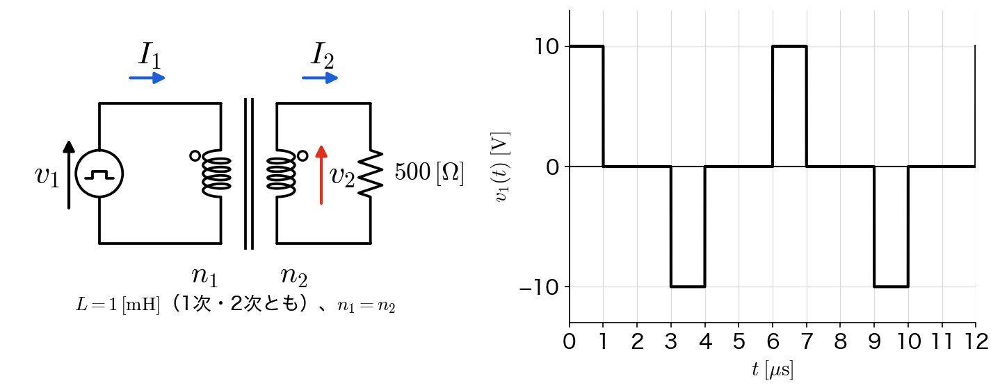
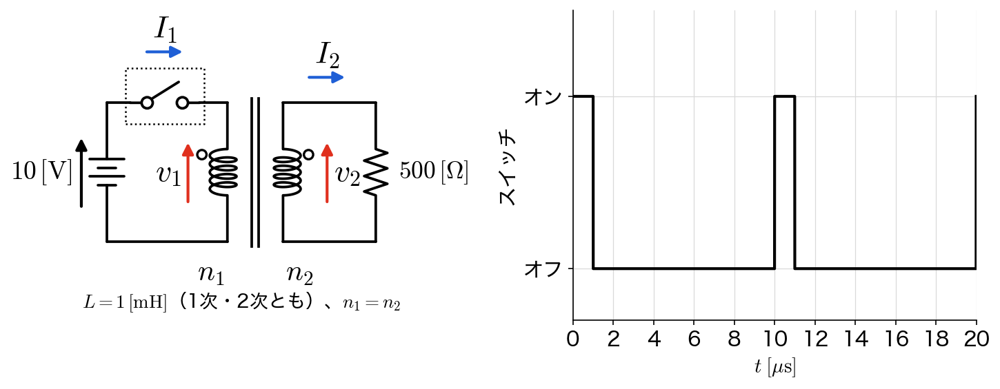
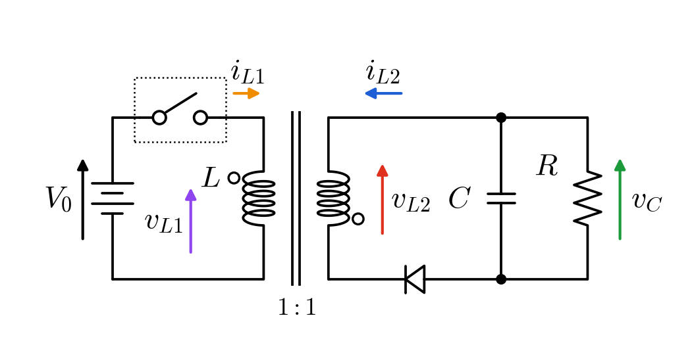

- 解答用紙は各自で準備すること。コピー用紙でも構いません。
- 解答用紙の左上に第何回目の授業の演習問題かを記入し、右上には自分の学生番号と名前を記入する。
- 解答用紙を写真で撮って、Google Classroom の演習問題の該当先に提出する。
この演習問題は、下記の理解度を確認することを目的としています。
問題1：励磁電流と負荷電流
- $v_1 = L\,dI_m/dt$ から、パルスの電圧をかけたときの励磁電流の波形を描けるか。
- 負荷電流が作る磁束を打ち消すように1次側に電流が流れ、$I_1 = I_m + I_\ell$ になることを説明できるか。
- 励磁電流は負荷に電力を送らず、鉄心にエネルギーを出し入れしているだけであることを、第4回のコイルのエネルギーの式で確かめられるか。
- 励磁電流が毎周期 $0$ に戻るには、1周期の $v_1$ の積分が $0$ でなければならないことを説明できるか。
問題2：スイッチで切ったときの励磁電流の行き先
- スイッチを切っても励磁電流は急には変われないことから、2次側の電流と電圧の向きが反転することを説明できるか。
- 与えられた解の形を式に代入して、時定数 $\tau = L/R$ を求められるか。
- オンの間に鉄心に蓄えたエネルギーが、オフの間にどこへ行くかを説明できるか。
- 1次側のループの KVL から、スイッチに電源より大きな電圧がかかることを説明できるか。
問題3：フライバックコンバータ
- オンとオフの電流の経路を描き、オンの時にダイオードに電流が流れない理由を ○ の極性から説明できるか。
- 定常状態の条件（1周期の $v_{L1}$ の積分が $0$）から $v_C = \dfrac{D}{1-D}V_0$ を導き、昇降圧チョッパーと符号が違う理由を説明できるか。
- 電力のつり合いから、電源の電流の平均値とオンの区間の $i_{L1}$ の平均値を求められるか。
- オフの時に磁束を保つ電流を流す巻線と、エネルギーの行き先を説明できるか。
問題１：励磁電流と負荷電流
下図のように、鉄心に2つのコイル（1次側の巻数$n_{1}$、2次側の巻数$n_{2}$、$n_{1}=n_{2}$）を巻いた変圧器の1次側に、パルスの電圧源$v_{1}(t)$をつないだ。1次側・2次側のコイルの自己インダクタンスはどちらも$L=1\,[\mathrm{mH}]$で、磁束の漏れとコイルの抵抗は無いものとする。○は同じ位相の端子で、$n_{1}=n_{2}$なので2次側の電圧は$v_{2}=v_{1}$（向きは図の矢印）になる。$v_{1}(t)$は右のグラフのように周期$6\,[\mu\mathrm{s}]$で、$0\leq t\lt 1\,[\mu\mathrm{s}]$で$+10\,[\mathrm{V}]$、$3\leq t\lt 4\,[\mu\mathrm{s}]$で$-10\,[\mathrm{V}]$、それ以外は$0$である。$t=0$で電流はすべて$0$とする。以下の問いに答えよ。

- 2次側に何もつながず開放にした（$I_{2}=0$）。このとき1次側に流れる電流は励磁電流$I_{m}$だけで、$v_{1}=L\,dI_{m}/dt$が成り立つ。$0\leq t\leq 12\,[\mu\mathrm{s}]$の範囲で$I_{m}(t)$の波形を描き、その最大値を求めよ。また、$v_{1}=0$の区間で$I_{m}$が一定のままになる理由を説明せよ。
- 2次側に$500\,[\Omega]$の抵抗をつないだ。$v_{2}(t)$と$I_{2}(t)$の波形を、$0\leq t\leq 12\,[\mu\mathrm{s}]$の範囲で描け。
- 負荷をつないでも、鉄心の磁束を作る励磁電流$I_{m}$は(1)と変わらない。2次側の電流$I_{2}$が鉄心に作る磁束を打ち消すように、1次側には負荷電流$I_{\ell}$が流れ、$n_{1}I_{\ell}=n_{2}I_{2}$、$I_{1}=I_{m}+I_{\ell}$となる。$0\leq t\leq 12\,[\mu\mathrm{s}]$の範囲で$I_{1}(t)$の波形を描き、その最大値と最小値を求めよ。
- $0\leq t\lt 1\,[\mu\mathrm{s}]$の区間で、電源が出す電力$v_{1}I_{1}$と、抵抗で消費される電力$v_{2}I_{2}$の差を求めよ。その差をこの区間で積分したエネルギーが、$t=1\,[\mu\mathrm{s}]$でコイルに蓄えられているエネルギー$\frac{1}{2}LI_{m}^{2}$（第4回）に等しいことを確かめよ。また、$3\leq t\lt 4\,[\mu\mathrm{s}]$の区間では、このエネルギーがどうなるか説明せよ。
- 負のパルスをなくし、$+10\,[\mathrm{V}]$・$1\,[\mu\mathrm{s}]$のパルスだけを$6\,[\mu\mathrm{s}]$ごとにかけた（2次側は(2)と同じ）。$I_{m}$は周期ごとにどうなるか答えよ。また、$I_{m}$が毎周期$0$に戻るためには、1周期の$v_{1}$の積分がどうなっていなければならないか答え、第5回のチョッパー回路の定常状態の条件と比べよ。
問題２：スイッチで切ったときの励磁電流の行き先
下図のように、問題１の変圧器（$L=1\,[\mathrm{mH}]$、$n_{1}=n_{2}$、2次側は$R=500\,[\Omega]$）の1次側に、$10\,[\mathrm{V}]$の直流電源と制御スイッチをつないだ（スライドp29〜p30の回路）。スイッチは右のグラフのように、周期$10\,[\mu\mathrm{s}]$のうち$0\leq t\lt 1\,[\mu\mathrm{s}]$だけオンになる。$t=0$で電流はすべて$0$とする。問題１と同じく、$v_{2}=v_{1}$、$v_{1}=L\,dI_{m}/dt$、$n_{1}I_{\ell}=n_{2}I_{2}$、$I_{1}=I_{m}+I_{\ell}$が成り立つ。以下の問いに答えよ。

- オンの区間（$0\leq t\lt 1\,[\mu\mathrm{s}]$）の$v_{1}$、$I_{m}$、$I_{2}$、$I_{1}$を求め、$t=1\,[\mu\mathrm{s}]$の直前の値を答えよ。
- スイッチがオフになると$I_{1}=0$になる。一方、コイルの電流は急には変われないので、鉄心の磁束を作っている$I_{m}$はオフになった直後も同じ値のままである。オフになった直後の$I_{2}$と$v_{2}$を求め、オンの時と比べて向きがどうなるか説明せよ。
- オフの区間はずっと$I_{1}=0$なので、(2)と同じく$I_{2}=-I_{m}$が成り立つ。これと$v_{1}=L\,dI_{m}/dt$、$v_{2}=v_{1}$、$v_{2}=RI_{2}$を組み合わせて、$\dfrac{dI_{m}}{dt}=-\dfrac{R}{L}I_{m}$となることを示せ。この式を満たす$I_{m}$は、オフになった時刻を$t_\mathrm{off}=1\,[\mu\mathrm{s}]$、そのときの値を$I_{0}$（(1)で求めた値）として、$I_{m}(t)=I_{0}\,e^{-(t-t_\mathrm{off})/\tau}$の形で表される。これを式に代入して、時定数$\tau$を$L$と$R$で表し、その値を求めよ。さらに、スライドp30のシミュレーションの波形を参考にして、$0\leq t\leq 20\,[\mu\mathrm{s}]$の範囲で$v_{2}(t)$、$I_{1}(t)$、$I_{2}(t)$の概形を描け（次にオンになる$t=10\,[\mu\mathrm{s}]$までに、$I_{m}$はほぼ$0$に戻るとみなしてよい）。
- $t=1\,[\mu\mathrm{s}]$でコイルに蓄えられているエネルギー$\frac{1}{2}LI_{m}^{2}$（第4回で扱ったコイルの磁気エネルギー）を求めよ。また、オフの区間に電流が流れているのはどこかを考えて、このエネルギーがオフの区間でどこへ行くか答えよ。
- スイッチの両端の電圧を$v_\mathrm{sw}$（電源側が高い向き）とすると、1次側のループの KVL は$10=v_\mathrm{sw}+v_{1}$である。オンの間と、オフになった直後の$v_\mathrm{sw}$を求めよ（スライドp30のシミュレーションの一番上の V(vsw) は、スイッチを開け閉めする信号で、ここでの$v_\mathrm{sw}$とは別のものである）。さらに、2次側の抵抗を外して開放にしたら、スイッチがオフになった瞬間に何が起こるか、コイルの枝構成式$v_{1}=L\,dI_{m}/dt$を用いて説明せよ。
問題３：フライバックコンバータ
下図のフライバックコンバータ（絶縁型の昇降圧チョッパー回路、スライドp35〜p38）について考える。変圧器の1次巻線と2次巻線の巻数は等しく（$1:1$）、自己インダクタンスはどちらも$L$で、磁束の漏れは無いものとする。○は同じ位相の端子で、1次と2次で○の位置が上下逆になっている（スライドp35の「極性の向きに注意」）。○の側どうしは同時に高電位になり、$1:1$なので、2次巻線の○側から見た電圧は、1次巻線の○側から見た電圧と等しい。$i_{L1}$、$i_{L2}$、$v_{L1}$、$v_{L2}$、$v_{C}$の向きは図の矢印のとおりで、スライドp38と同じである。制御スイッチは$0\leq t\lt DT$でオン、$DT\leq t\lt T$でオフになる。ダイオードは理想的なもの（オンのときの電圧は$0$）とし、コンデンサの電圧$v_{C}$は1周期のあいだほぼ一定とみなしてよい。以下の問いに答えよ。

- スイッチがオンの時とオフの時のそれぞれについて、電流が流れる経路を図に描き込め（スライドp37）。また、オンの時にダイオードに電流が流れない理由を、変圧器の○の極性から説明し、そのときダイオードにかかる逆向きの電圧の大きさを$V_{0}$、$v_{C}$で表せ。
- オンの時とオフの時のそれぞれについて、$v_{L1}$と$v_{L2}$を$V_{0}$、$v_{C}$で表せ。次に、スライドp36の手順③の定常状態の条件（1周期の$v_{L1}$の積分が$0$）から、$v_{C}=\dfrac{D}{1-D}V_{0}$となることを導け。また、第5回の問題４の昇降圧チョッパー回路の結果$v_{C}=-\dfrac{D}{1-D}V_{0}$と、大きさと符号を比べよ。符号が違う理由を、オフの時にコンデンサに電流がどちら側から流れ込むかから説明せよ。
- スライドp38と同じく、$V_{0}=12\,[\mathrm{V}]$から$v_{C}=5\,[\mathrm{V}]$を作りたい。$D$を求めよ。
- (3)の条件で、負荷を$R=5.0\,[\Omega]$とする（スライドp38）。負荷で消費される電力を求めよ。また、入力と出力の電力が等しいとして、電源から流れる電流の平均値を求めよ。さらに、オンの区間の$i_{L1}$の平均値を求め、スライドp38の$i_{L1}$の波形と比べよ（ヒント：$i_{L1}$が流れるのは1周期のうち$D$の割合の時間だけなので、電源の電流の1周期の平均値は、オンの区間の$i_{L1}$の平均値の$D$倍になる）。
- オフの時に、鉄心の磁束を保つ電流を流しているのは1次巻線と2次巻線のどちらか、(1)の経路から答えよ。また、オンの間に変圧器に蓄えられたエネルギーは、オフの間にどこへ行くか答え、問題２(4)と比べよ。